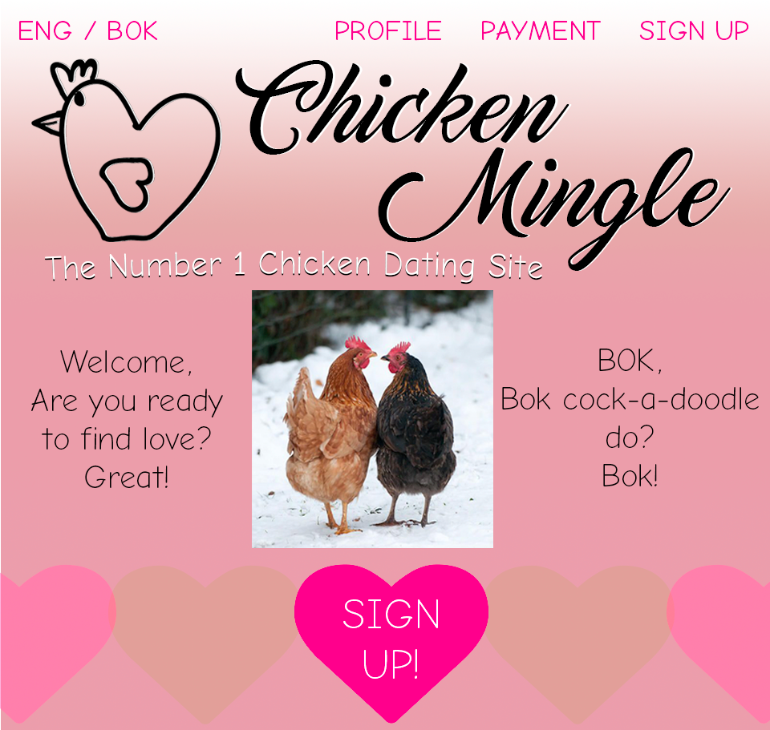

COLLABORATIVE FEEDBACK - WEEK 9
MEDIUM TASK
Positive Feedback on the group's presentation:
- - PRO: Simple layout, easy to follow, not too distracting from the subject
- - PRO: Very engaging presentation, funny and interactive group work
- - PRO: Good content, relates to the digital media field and it's importance
- - CON: The yellow font colour is hard to read, a darker font on a light background would increase legibility
- - CON: Would be better speak a little louder for the students in the back to hear better
HARD TASK
Feedback on the old design:
- - PRO: It's a simple layout
- - CON: The orange font colour is hard to read
- - CON: The content is not aligned to anything else on the page
MY RE-DESIGN
